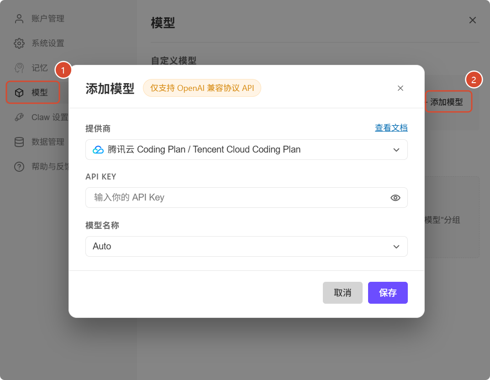
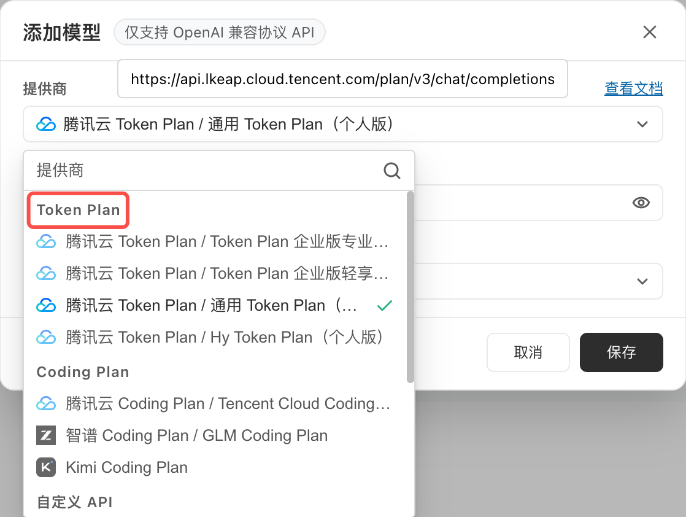
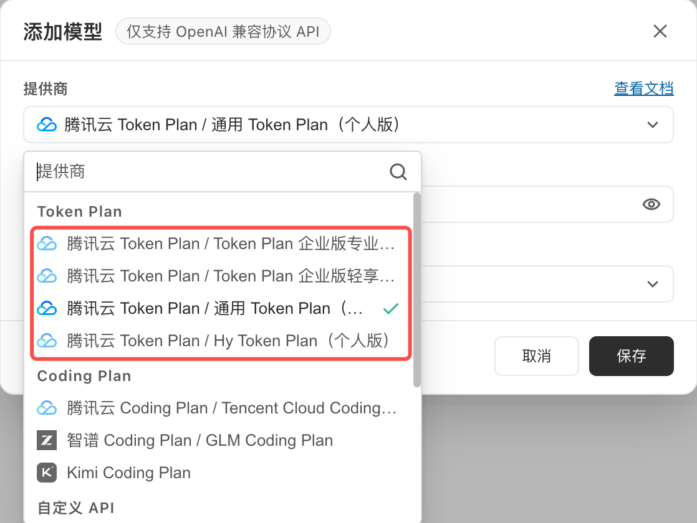
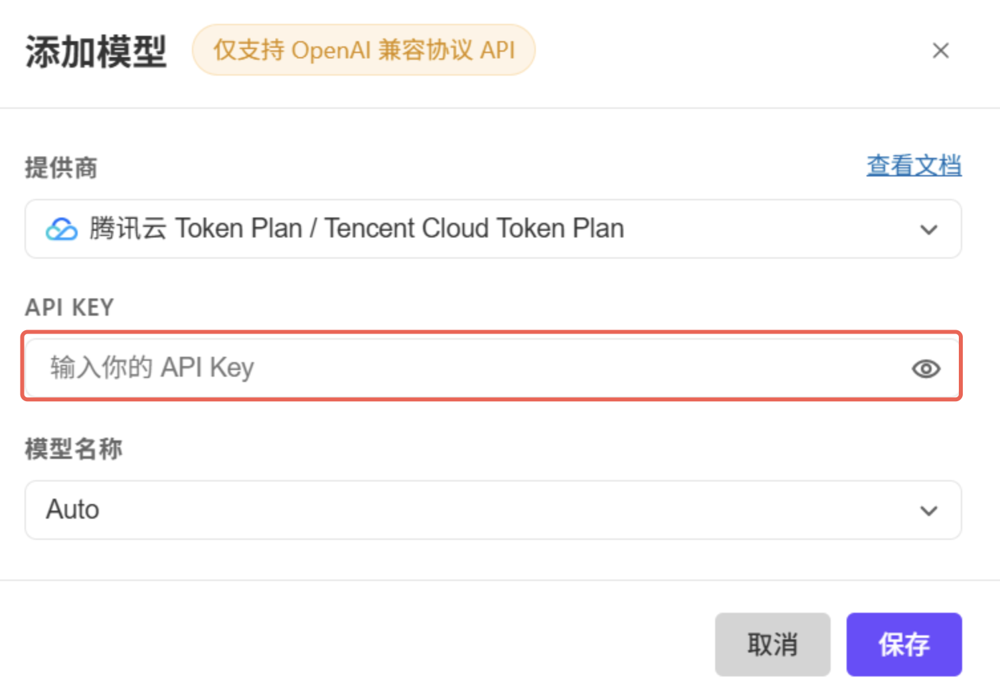
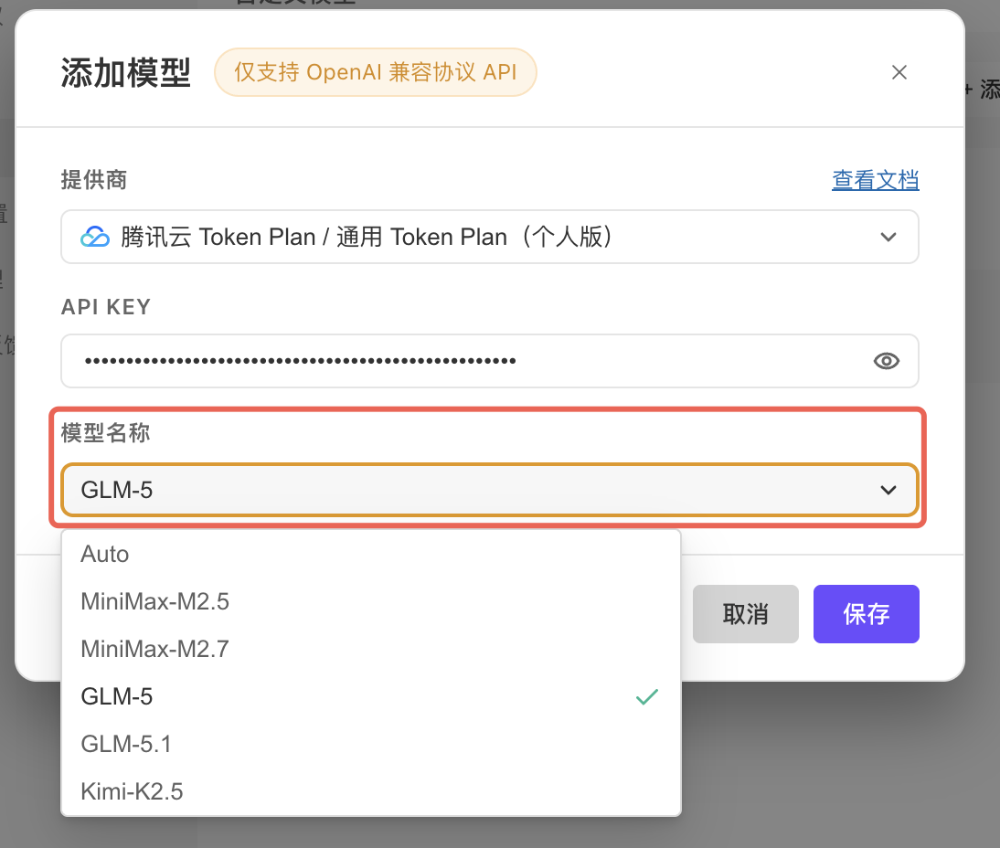
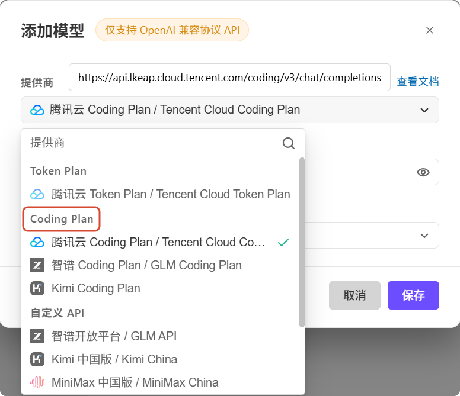
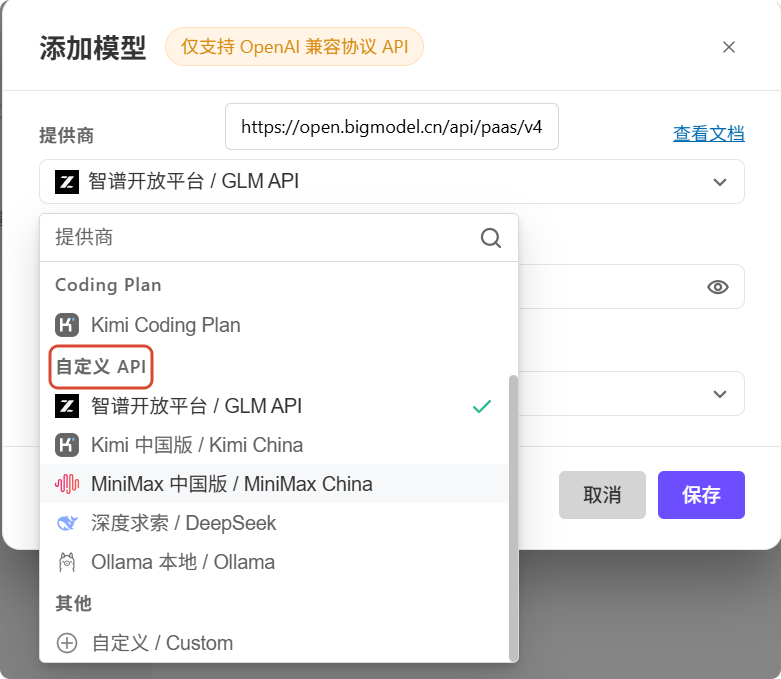
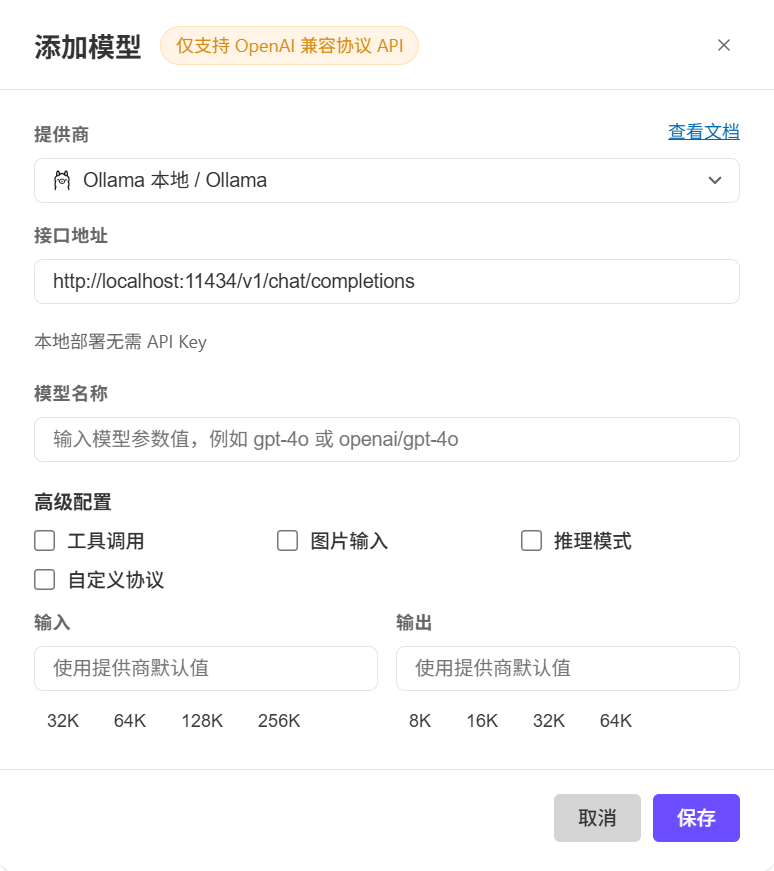
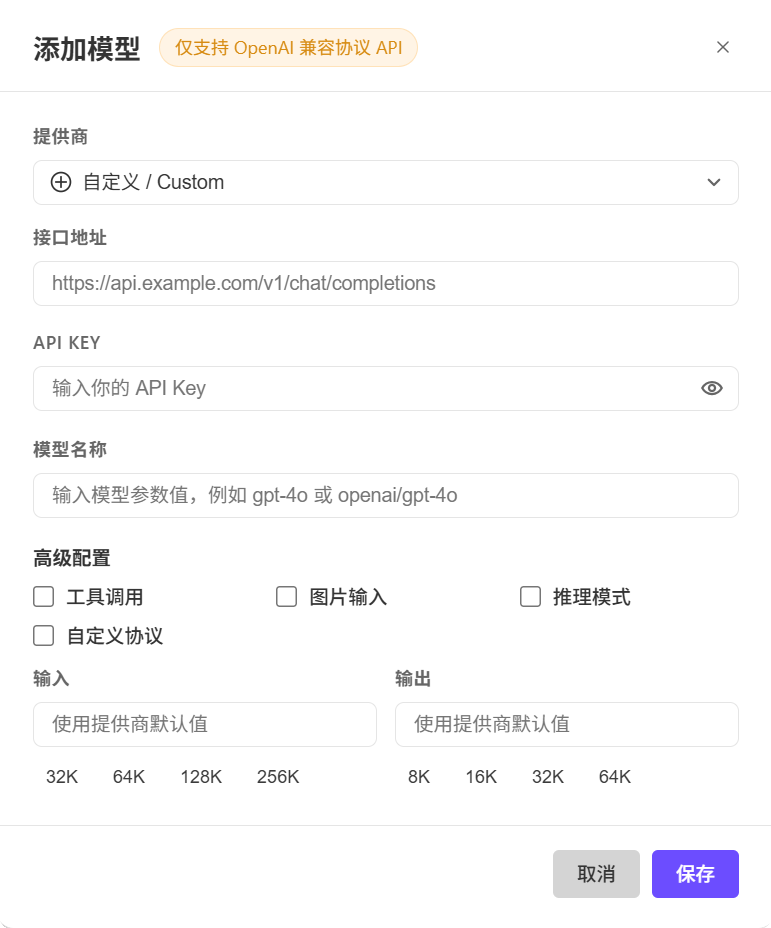

模型配置
产品内置主流大模型，覆盖推理、多模态及图像处理能力，并支持自定义模型。自定义模型可通过可视化界面配置，支持添加、编辑和删除模型，无需手动编辑配置文件。
概述
模型配置允许您自行接入第三方大模型作为 WorkBuddy 调用底座。配置参数（含 API Key）仅保存在本地 workbuddy/models.json 中，不上传云端。
使用时，WorkBuddy 仅作为通信链路，将您的输入直接转发至所配置的第三方模型，输出由该模型直接返回；除为完成请求、必要传输、安全审计、故障排查、依法留存所必需外，WorkBuddy 不读取、不存储相关内容。
模型选择
自动模式(Auto)
自动模式(Auto)启用后，WorkBuddy将根据任务自动选择适合的模型。
内置模型
| 模型名称 | 简介 | 可用功能 |
|---|---|---|
| Auto | 平衡效果与速度 | √ 图片输入 |
| Hy3 High | 混元思考模型 High 档位，限时免费 | √ 图片输入 √ 推理模型 |
| GLM-5.2 | 智谱旗舰模型，支持夜间折扣 | √ 图片输入 √ 推理模型 |
| GLM-5.1 | 能力均衡，适合日常使用 | √ 图片输入 √ 推理模型 |
| GLM-5v-Turbo | 原生多模态模型 | √ 图片输入 √ 推理模型 |
| MiniMax-M3 | 能力均衡，适合日常使用，性价比高 | √ 图片输入 √ 推理模型 |
| Kimi-K2.7-Code | 面向编程场景优化 | √ 图片输入 √ 推理模型 |
| Kimi-K2.6 | 多模态模型，适合日常任务 | √ 图片输入 √ 推理模型 |
| Kimi-K2.5 | 多模态模型，适合日常任务 | √ 图片输入 √ 推理模型 |
| Deepseek-V4-Pro High | Deepseek V4 Pro 档位 | √ 推理模型 |
| Deepseek-V4-Flash High | Deepseek V4 Flash 档位，速度优先 | √ 推理模型 |
自定义模型
- 模型列表：已配置的自定义模型以列表形式展示，每条记录显示模型名称与供应商图标。
- 添加 / 编辑 / 删除：支持通过弹窗操作完成全部增删改流程。
- 对话入口联动：对话界面的模型选择器展示自定义模型分组，并支持快捷跳转到配置界面进行编辑。
自定义模型管理
在设置页模型中可以通过图形界面管理自定义模型，无需操作配置文件：

配置在保存后自动持久化，选择标准供应商时，工具调用、图片输入等能力标记会自动写入，无需手动配置。
TIP
已通过 ~/.codebuddy/models.json 配置的自定义模型在界面升级后仍可正常使用，并可通过 UI 界面查看、编辑或删除，无需再直接操作配置文件。
接入方式
提供商接入
从提供商列表中选择或选择自定义API后，URL、模型列表、能力标记（工具调用、图片输入、推理模式等）会自动填充，仅需补全 API Key 即可保存使用，全程无需手动修改任何配置文件。
- Token Plan
腾讯云 Token Plan专为AI 编程和 WorkBuddy 场景打造，提供面向个人、企业多种类型的订阅套餐，兼容混元、MiniMax、Kimi、GLM等主流大模型，满足从个人开发到企业规模化 AI 应用的需求。
如果您已经购买了腾讯云 Token Plan 套餐，可将套餐支持的模型添加到自定义模型配置中。

第一步：在添加模型页面，根据您购买的套餐类型，选择对应的供应商，可选择如下：
- 腾讯云 Token Plan / Token Plan 企业版专业套餐
- 腾讯云 Token Plan / Token Plan 企业版轻享套餐
- 腾讯云 Token Plan / 通用 Token Plan（个人版）
- 腾讯云 Token Plan / Hy Token Plan（个人版）

第二步：填入套餐对应的 API Key。不同套餐的 API Key 可查看如下指引获取：
- Token Plan 企业版专业套餐 API Key 获取指引
- Token Plan 企业版轻享套餐 API Key 获取指引
- 通用 Token Plan（个人版）API Key 获取指引
- Hy Token Plan（个人版）API Key 获取指引
安全提示
- 请勿将 API Key 分享给他人。API Key 关联您的账户与套餐额度，泄露可能导致他人盗用您的配额、产生额外费用或造成数据安全风险。
- 请确认供应商可信。接入第三方模型前，建议阅读该模型服务方的服务协议与隐私政策，确保其符合您对数据安全与合规的要求。

第三步：选择套餐支持的模型，不同套餐的可用模型不一样。
以下截图以通用 Token Plan（个人版）套餐：GLM-5 模型为例。

- Coding Plan
Coding Plan是为 AI Coding 场景推出的专属订阅套餐，支持接入腾讯云Coding Plan、智谱Coding Plan和Kimi Coding Plan。

- 自定义API
内置了主流厂商的预设入口，可一键完成接入：

本地部署
Ollama 是一个开源的本地大模型运行工具，安装后通过一行命令即可拉取并运行开源模型。Ollama 启动后会在本地监听 HTTP 端口（默认 11434），并自动提供兼容 OpenAI 协议的接口供WorkBuddy对接。
适用场景：
- 数据隐私 / 内网合规：代码与对话内容不出本机，适合金融、政企、敏感项目场景。
- 零成本试用：不用消耗 Token、不用付费 API Key，把硬件当算力。
- 离线可用：飞机上、内网开发机、没网的环境也能用 WorkBuddy。

自定义
如果你的模型服务不在上方列表中，可选择自定义/Custom，手动填写 URL、API Key 与模型名接入。

自定义协议
当模型服务使用非标准 URL 路径（如经过网关或代理层封装）时，可在高级配置中开启自定义协议开关。开启后 WorkBuddy将直接按填写的 URL 发起请求，跳过路径校验与自动补全。
| 状态 | 行为 |
|---|---|
| 关闭（默认） | 使用标准 /chat/completions 路径，自动校验并补全接口地址 |
| 开启 | 直接使用用户填写的接口地址发起请求，跳过路径校验与自动补全逻辑 |
注意事项与重点提示
信息收集与使用
- 本地文件读写：读写
workbuddy/models.json（模型配置）。 - API Key 存储：仅本地保存，WorkBuddy 不向云端上传。
- 对话内容流向：由 WorkBuddy 转发至自定义模型，由该模型按其规则处理。
积分消耗说明
- 自定义模型产生的全部费用（Token、订阅等）由您向第三方支付。
第三方共享
WorkBuddy 仅作通信链路，输入内容直达第三方模型；具体处理规则按您与该第三方的协议执行
免责声明
请确保模型来源合法；接入前建议先阅读该模型服务方的协议与隐私政策。
使用建议
- 自定义模型由第三方独立运营，其可用性、稳定性、安全性、合规性与生成结果请关注该第三方的服务状态与公告。
- 使用过程中可能持续触发模型调用，建议密切关注您在第三方的账户费用，避免出现超出预期的支出。
- API Key 是访问您第三方模型账号的关键凭据，请妥善保管，避免在共享环境中填写或导出；不再使用时建议在
models.json中清理。 - 若接入存在违法违规风险，依据用户协议 §8.3.2，WorkBuddy 可能中止、限制或禁止该模型的接入。